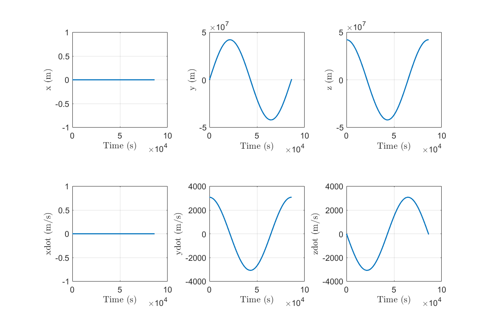
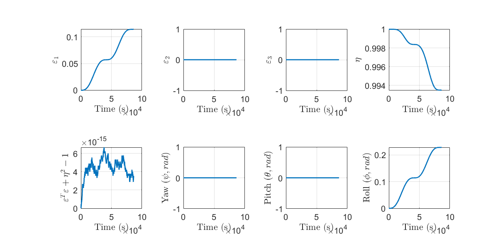
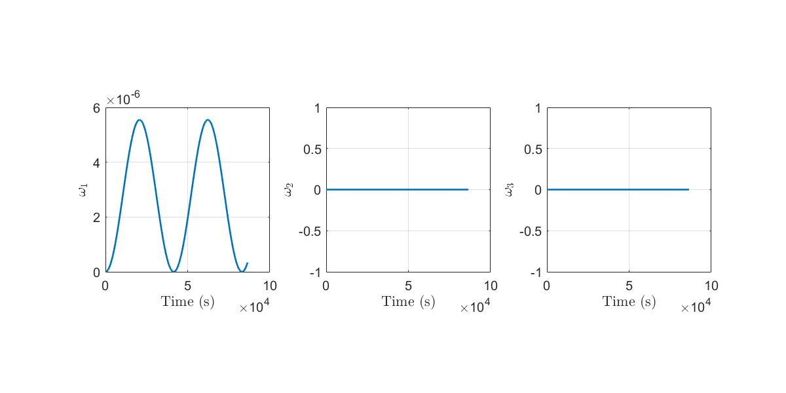
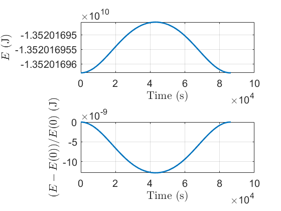
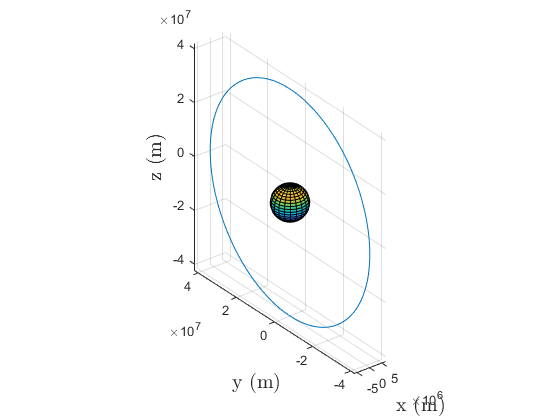
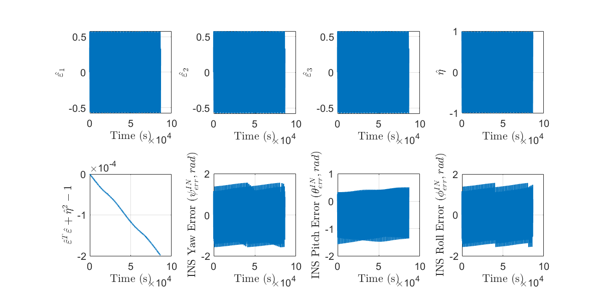
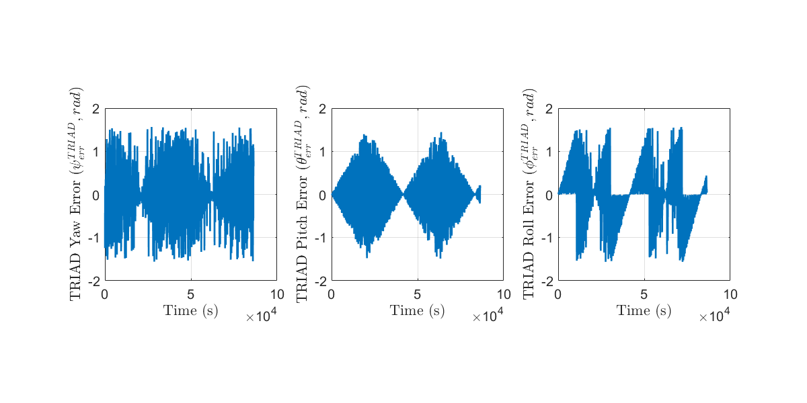

Contents
Part 5 Code Deliverables
Trevor Burgoyne, 13 Apr 2023 AEM 4305 Spacecraft Attitude Dynamics and Control
% Add path to simulation functions so that we can use them addpath '..\simulation\';
Load data and plot
load('..\simulation\output\part_5_full_orbit.mat')
plot_script_v2
       Question 3(b)(i): Does the plot of norm(q_hat) drift more than norm(q)?
Yes, and substantionally so. While q drifts from a norm of 1 on a scale of ~10^-15, for q_hat this is several orders of magnitude larger at ~10^-4. This is to expected, since there is a lot of noise in the gyro angular velocity measurements, which was used to compute q_dot. Without any attempt to characterize this noise (and potentially bias as well), the magnitude of q_hat is expected to drift since the gammma(q_hat)*omega)hat doesn't ensure a unit quaternion upon performing the ODE estimation.
Question 3(b)(ii): Which attitude determination worked best?
In terms of the magnitude of error, both the INS and TRIAD approaches were on the order of ~1 rad at different points in the simulation, but while the INS estimates consistently oscillated between extreme over/under estimation, TRIAD did at certain points return very accurate estimatations. Overall, the attitude of the spacecraft was not expected to change very much (only a gravity gradient torque was applied, and there was no initial angular velocity), and so it is likely that the magnitude of the noise was actually much larger than actual true values of angular velocity, and so perhaps this doesn't give the best comparison. The INS approach did provide a "smoother" estimate as one would expect, while TRIAD has some rapid jumps in error. Overall I'd say that TRIAD was more accurate, which makes sense given that my simulation was over one whole geosync orbitital period, and absent any corrections an INS estimate is known to drift and demonstrate biased measurements.